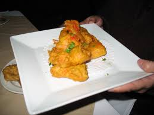
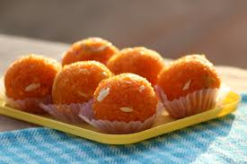

Veg Starters
Paneer Tikka

Marinated paneer cubes grilled to perfection with spices.
Pakora

Deep-fried fritters made with gram flour and assorted vegetables.
Samosa

Crispy pastry filled with spicy potato and peas mixture.
Dahi Puri

Mini crispy puris filled with yogurt, chutneys, and spices.
Aloo Tikki

Spiced potato patties served with chutneys.
Chilli Paneer

Indo-Chinese dish with paneer tossed in a spicy sauce.
Non-Veg Starters
Chicken Tikka

Boneless chicken marinated in yogurt and spices, then grilled.
Tandoori Chicken

Chicken marinated with yogurt and spices, cooked in a clay oven.
Mutton Seekh Kebab

Minced mutton mixed with spices and grilled on skewers.
Fish Amritsari

Batter-fried fish marinated with spices, a specialty from Punjab.
Prawn Koliwada
Mumbai-style deep-fried prawns in a spiced batter.
Main Course
Hyderabadi Biryani

A distinct style of biryani from the city of Hyderabad, known for its unique method of cooking marinated meat and rice together, resulting in a flavorful and aromatic dish.
Paneer Tikka
Chunks of paneer (Indian cottage cheese) marinated in spices, skewered with vegetables like bell peppers and onions, and grilled or baked until charred. It's a popular vegetarian appetizer.
Dosa

A thin, crispy pancake made from fermented rice and urad dal (black gram) batter. Originating from South India, it's often served with sambar (a lentil-based vegetable stew) and coconut chutney.
Butter Chicken (Murgh Makhani)

A beloved North Indian dish where grilled chicken pieces are simmered in a creamy tomato-based sauce, enriched with butter and a blend of spices. It's best paired with naan or steamed rice.
Chole Bhature

A Punjabi delicacy consisting of spicy chickpea curry (chole) served with deep-fried leavened bread (bhature). It's a popular choice for breakfast or brunch.
Desserts
Gulab Jamun

Deep-fried milk-solid dumplings soaked in sugar syrup flavored with cardamom and rose water.
Jalebi

Crispy, spiral-shaped sweet soaked in saffron-flavored sugar syrup.
Ladoo (Laddu)
Sweet round balls made from flour (besan, wheat, or semolina), ghee, sugar, and flavored with cardamom.
Barfi

A dense milk-based sweet, often flavored with cardamom, coconut, pistachio, or chocolate.